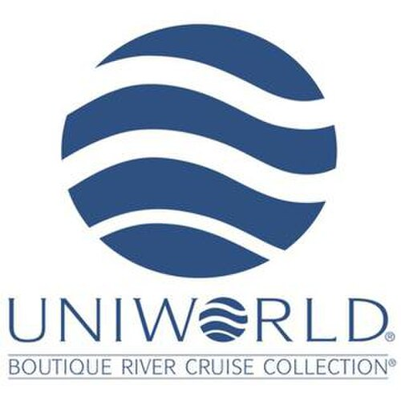

Honey coloured limestone streets, a complete ring of medieval walls you can walk right around, and a harbour full of little wooden boats that still look the same as they did centuries ago. Dubrovnik is one of the most requested destinations on my books right now, and once clients see it in person I understand why every time. Here is exactly how I put together a trip to Dubrovnik and the Dalmatian coast, the hotels I can price up for you, and what it actually costs.
Dubrovnik's Old Town is a genuinely compact, walkable UNESCO World Heritage site, ringed by nearly two kilometres of stone walls that you can climb up onto and walk the whole way round, with the Adriatic on one side and a sea of terracotta rooftops on the other. It is also the real life backdrop for King's Landing in a certain famous television series, which brings its own crowd of fans, but Dubrovnik was a major maritime power and trading city for centuries before any film crew turned up, and that history is everywhere you look.
I compare prices across the suppliers I work with for flights, hotels and transfers to find the best fit for your dates and budget, whether that is a straightforward week in the Old Town or a longer multi centre trip taking in Montenegro, Split or Mostar as well.
Dubrovnik gets genuinely busy in July and August, especially when a cruise ship or two is in port and the Old Town fills up by late morning. I always suggest an early start for the walls and the main sights, and tell clients which months give them the same sunshine with far fewer crowds.
Five to seven nights in Dubrovnik itself works well for most clients, long enough for the Old Town, the walls, a day on Lokrum and a boat trip or two, without feeling rushed. Clients combining Dubrovnik with Montenegro, Split or Mostar, which I cover further down, tend to book nine nights or more so each place gets a proper look in.
It suits couples, families and groups who want a genuine city and beach combination, history lovers, keen walkers happy to climb the walls and the steps up Mount Srd, and anyone who wants a European short haul destination with real character rather than a purpose built resort strip. It is less suited to clients who want nightlife on their doorstep every evening, since Dubrovnik's charm is on the quieter, more refined side, or anyone wanting to avoid steps and hills entirely, since the Old Town and much of the coast around it is built on a steep hillside.
Dubrovnik Airport has direct flights from a good number of UK airports, including London Heathrow, Gatwick, Stansted and Luton, Manchester, Birmingham, Belfast, East Midlands and Leeds Bradford, with British Airways, easyJet, Jet2, TUI and Croatia Airlines all operating routes, more of them in summer than in winter. Flight time is around two hours and forty five minutes to three hours direct.
The airport sits about twenty minutes south of the Old Town by road, and taxis cannot drive into the Old Town itself, so a transfer drops you at the nearest gate and you walk the final stretch with your bags, which I always warn clients about in advance if their hotel is right in the centre.
If your hotel is inside the Old Town walls, ask about porter or luggage trolley arrangements before you book. Some of the lanes are steep cobbled steps, and I always flag this to clients travelling with a lot of luggage or anyone who would struggle with stairs.
Dubrovnik has a classic Mediterranean climate, with hot dry summers and mild, wetter winters. These are long term monthly averages for the city.
| Month | Avg high | Avg low | Sea temp |
|---|---|---|---|
| January | 7°C | 0°C | 14°C |
| February | 9°C | 1°C | 14°C |
| March | 12°C | 3°C | 14°C |
| April | 16°C | 7°C | 15°C |
| May | 21°C | 11°C | 18°C |
| June | 25°C | 14°C | 22°C |
| July | 28°C | 16°C | 24°C |
| August | 28°C | 16°C | 25°C |
| September | 24°C | 13°C | 23°C |
| October | 19°C | 9°C | 21°C |
| November | 13°C | 5°C | 18°C |
| December | 8°C | 1°C | 15°C |
Long term monthly averages for Dubrovnik, compiled from published climate guides. Actual conditions vary year to year.
The sea stays genuinely swimmable well into October, so a late September or early October trip gives you warm water and far thinner crowds on the walls than you get in peak summer.
Late May, June and September are my favourite months to recommend, with warm, swimmable sea, reliably sunny weather and noticeably thinner crowds on the walls and in the Old Town than peak summer. July and August are the hottest and busiest months, with the biggest cruise ship crowds and the highest prices, so I always book those well ahead if clients want those specific dates. October is a lovely, calmer shoulder month, and Dubrovnik stays a genuine year round destination, with a quieter, more local feel over winter and a popular Christmas market in the Old Town through December.
Four real, bookable picks around Dubrovnik, from the Old Town itself to Lapad, Babin Kuk and a private island escape.

A grand, century old five star sitting right on the water just outside the Old Town walls, with its own private beach, a spa and some of the best Old Town views of any hotel in the city. A long standing favourite with clients who want to walk into the walls in ten minutes but come home somewhere a little more peaceful. I can price this one up for you.

A large, family friendly hotel right on Lapad's long sandy and shingle beach, with an outdoor pool, a kids' club in peak season and a regular bus or boat into the Old Town. A sensible, relaxed base for families who want a proper beach as well as the sightseeing. I can price this one up for you.

An adults only hotel on its own small island a short boat transfer from Dubrovnik, with all meals and drinks included, quiet coves for swimming, and no cars anywhere on the island. The one to pick for clients who want total peace after a few days exploring the Old Town. I can price this one up for you.

A well run, good value resort hotel on the Babin Kuk peninsula, with a large pool, direct sea access and a regular local bus into the Old Town in around twenty five minutes. A solid pick for families and couples who want a proper resort feel without the Old Town price tag. I can price this one up for you.
Facilities as published at the time of writing. I always check current pricing, board basis and availability before booking.
The Old Town itself is entirely pedestrian, with no cars allowed inside the walls, so everything is on foot once you are through one of the gates. A cheap and frequent local bus network connects the Old Town with Lapad, Babin Kuk and the airport, and taxis are plentiful but, as above, cannot enter the Old Town itself. For day trips further afield, such as Montenegro, Split or Mostar, I usually arrange a private transfer or a small group tour, since public transport across the borders is slower and less convenient. Regular boat trips run from the Old Town harbour out to Lokrum and the Elaphite Islands throughout the season.
A few of the bookable tours and tickets worth having on your radar, from walking tours of the walls to boat trips along the coast.

Nearly two kilometres of medieval fortifications you can walk right around, taking in sweeping views over the terracotta rooftops and out to sea, followed by a wander down the main limestone paved street, Stradun, with its baroque churches and the old pharmacy still trading inside the Franciscan monastery.

A fifteen minute ferry ride from the Old Town harbour brings you to this wooded nature reserve, with a botanical garden, a ruined monastery, a saltwater lake nicknamed the Dead Sea for its warm still water, and a resident population of peacocks that roam freely around the island.

A short cable car ride up the hill behind the Old Town gives you the single best overview of Dubrovnik, with the whole walled city, the harbour and the islands laid out below. There is a cafe at the top, a Napoleonic era fort with a small museum, and it is a lovely spot to watch the sun go down.

A chain of small, mostly car free islands just north of Dubrovnik, popular as a full day boat trip, with the villages of Sipan, Lopud and Kolocep each offering a quieter pace, sandy coves and simple seafood restaurants away from the Old Town crowds.
Dubrovnik sits right at the southern tip of Croatia, within easy reach of Montenegro, the rest of the Dalmatian coast and Bosnia and Herzegovina, which makes it a genuinely easy base to extend into a longer multi centre trip. Here are three real ways I would put it together.

A straightforward border crossing south brings you to the stunning Bay of Kotor, with its own walled old town, and on to the superyacht marina at Tivat. I would base you at the Regent Porto Montenegro, a five star right on the marina, for a few nights either side of your Dubrovnik stay.

A couple of hours up the coast, Split's Roman old town centres on Diocletian's Palace, and makes a great springboard for a ferry out to Hvar. I would base you at the Radisson Blu Resort & Spa in Split, then on to somewhere like Maslina Resort on Hvar for the island leg.

A longer day trip or overnight inland into Bosnia and Herzegovina brings you to Mostar, famous for its rebuilt Ottoman era bridge and the divers who still leap from it into the river below. I would base you at the Mostar Marriott Hotel for an overnight stay rather than rushing it as a single long day.
These are built as separate bookings combined into one trip rather than a single packaged product, message me and I will put the whole itinerary and transfers together for you.
Croatia's official currency is the Euro, and prices below are shown in pounds, converted at an exchange rate of around 1.19 Euros to the pound, correct at the time of writing.
| Item | Typical price |
|---|---|
| Coffee in a cafe | £2.35 |
| Cheap lunch or a quick bite | £10.50 |
| Meal for two, mid range restaurant | £56.70 |
| Local bus fare, Old Town to Lapad | £1.65 |
| Taxi, airport to the Old Town gates | £30 to £32 |
| Weekly market shop, one person | around £19 |
Source: Numbeo's Dubrovnik cost of living data, checked at time of writing. Euro to pound conversion is approximate and will move around.
Dubrovnik is one of the pricier spots in Croatia, especially for food and drink inside the Old Town walls. Walking ten minutes out towards Lapad or Pile for dinner usually gets you the same quality for noticeably less.
The essentials, at a glance.
| Currency | Euro, Croatia's official currency since January 2023, cards widely accepted, some cash useful for small vendors and local buses |
| Plug type | Type C and F, the same as most of mainland Europe, voltage 230V, a UK adaptor is needed |
| Language | Croatian, with English widely spoken in hotels, restaurants and tourist areas |
| Flight time from the UK | Direct flights from several UK airports, around two hours and forty five minutes to three hours |
| Time difference | One hour ahead of the UK all year round, since both follow the same seasonal clock changes |
| Entry requirements | Croatia is part of the Schengen area, so UK passport holders do not need a visa for stays of up to 90 days in any 180 day period. Your passport should be less than 10 years old and valid for at least 3 months beyond your planned departure from the Schengen area. Border checks now include fingerprint and photo registration under the EU's Entry/Exit System, and the EU's ETIAS travel authorisation is expected to become mandatory from 2027, not yet at the time of writing |
Requirements change from time to time, I always check the current rules with clients before they travel.
Photos: Geio Tischler, Patrick Tomasso, Ivan Ivankovic, Cat Bassano, Linda Gerbec, Dawid Tkocz, Hugo Martin, Datingjungle, Archana Reddy, Walter Martin, Inera Isovic, Margo Evardson, Taras Terletskyy, olga brajnovic, Lidija Divjak and Christian Lendl via Unsplash.
For every destination, I compare prices across several of the suppliers I book with, so you are not limited to one company's price. Send me your dates and I will come back with the best options.

I can build a trip around the Old Town and the Dalmatian coast on its own, or a proper multi centre with Montenegro, Split and Hvar, or Mostar, around what you are after.